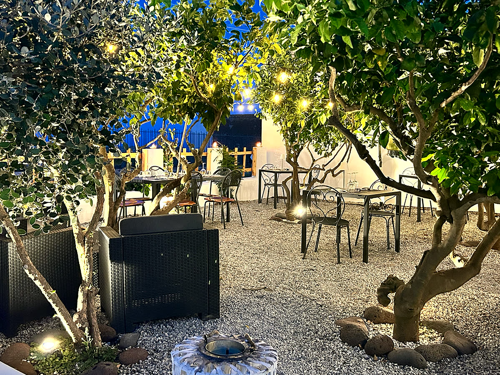
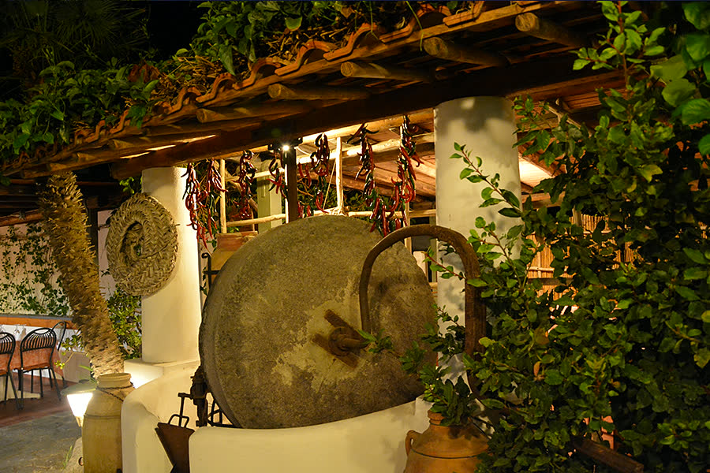
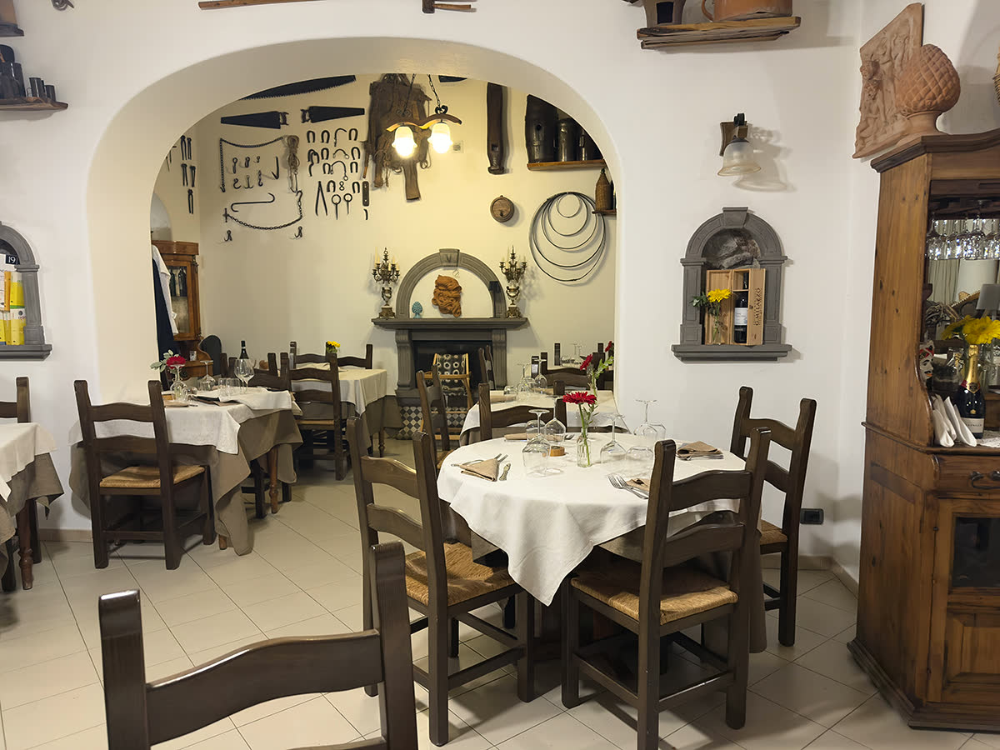
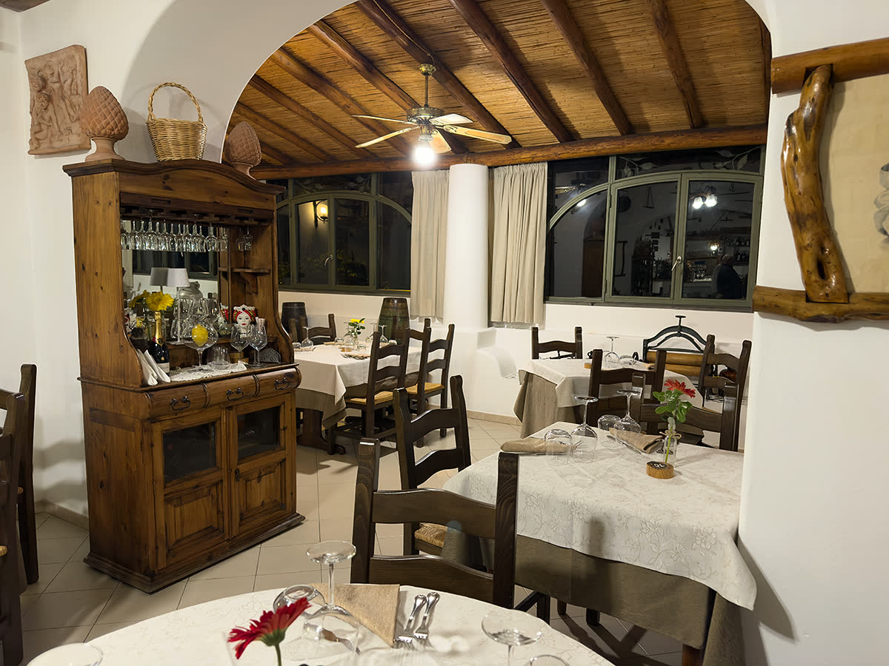

I campi
I grani autoctoni e gli ortaggi crescono nei terreni di proprietà della famiglia, qui a Lipari.
Chiocciola Osterie d'Italia 2026, Slow Food
Ristorante e pizzeria · Loc. Pianoconte di Lipari, isole Eolie
I grani autoctoni coltivati nei campi di famiglia, macinati nel mulino di casa, diventano qui pasta fresca, pane e pizza.

Il giardino la sera. Fotografia dell'archivio del ristorante.
Una delle più antiche ville di Lipari
«Il locale è stato ricavato dalla ristrutturazione di una delle più antiche ville di Lipari e prende il nome dall'antica e grande macina in pietra […] risalente al 1700 la quale serviva per macinare le olive.»Le loro parole, dal sito del ristorante.
Il viale d'ingresso è realizzato in pietra, e la sala è anche un piccolo museo dell'arte contadina: alle pareti ci sono gli antichi attrezzi che venivano utilizzati per coltivare le campagne.

La macina in pietra sotto il pergolato. Fotografia dell'archivio del ristorante.
Un progetto di famiglia
«Le Macine non è solo un ristorante, è un progetto di famiglia, nell'intento di valorizzare il più possibile i prodotti coltivati nei loro campi.» In cucina c'è Emiliano, al forno a legna Duilio; con loro i genitori, Giovanni Cipicchia e Tina Villanti. I terreni sono di proprietà della famiglia.
I grani autoctoni e gli ortaggi crescono nei terreni di proprietà della famiglia, qui a Lipari.
I cereali vengono moliti in proprio: una piccola macina da 10 chili all'ora dà le farine per la pasta e per gli impasti.
Un piccolo laboratorio artigianale di pasta fresca, lavorata con trafile di bronzo. Pane fatto in casa e pizza nel forno a legna, la sera.
Le varietà e il mulino da 10 chili/ora sono descritti da Pina Sozio sul Gambero Rosso, 15 agosto 2024.
«Il ristorante appartiene alla rete dell'Alleanza dei cuochi Slow Food, una rete di cuochi di tutto il mondo che hanno l'obiettivo di stringere un patto con i produttori locali per promuovere un cibo buono, pulito e giusto e salvaguardare la biodiversità.»Le loro parole, dal sito del ristorante.
Cucina eoliana e siciliana
«Il menù proposto dallo chef Emiliano vanta specialità preparate esclusivamente con ingredienti genuini e freschi e presentate con un tocco di creatività per rendere ogni pietanza bella da vedere oltre che buona da mangiare.» La carta dei vini raccoglie etichette eoliane e siciliane.
Alcuni piatti raccontati dal Gambero Rosso, agosto 2024
Sono i piatti descritti nell'articolo di Pina Sozio sul Gambero Rosso del 15 agosto 2024. Per la carta di oggi conviene chiamare.
Un piccolo museo dell'arte e cultura contadina
Tre buoni motivi per venirci a trovare, nelle loro parole: «mangiare sotto il pergolato in un'atmosfera calda e accogliente e lontano dal centro dell'isola»; «gustare le ricette tipiche della cucina isolana con un tocco di creatività, originalità ed innovazione»; «immergersi nel passato dove rivivere la tradizione e la cultura contadina eoliana».

La parete degli attrezzi contadini. Fotografia dell'archivio del ristorante.

La credenza e il soffitto in travi e canne. Fotografia dell'archivio del ristorante.
Un angolo di pace e verde a Pianoconte
«Il Ristorante Le Macine si trova a Pianoconte di Lipari. Dista 1,5 Km da Quattrocchi, il panorama più bello e suggestivo di Lipari, e solo 100 metri dal bivio che porta ad una fra le più note terme d'Italia, quelle di San Calogero.»Le loro parole, dal sito del ristorante.
Tutti i giorni, da Pasqua a fine ottobre.
12.00 – 14.30 e 19.00 – 23.00
La pizzeria solo la sera.